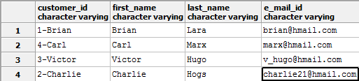

В сети много руководств по PostgreSQL, которые описывают основные команды. Но при погружении глубже в работу возникают такие практические вопросы, для которых требуются продвинутые команды.
Такие команды, или сниппеты, редко описаны в документации. Рассмотрим несколько на примерах, полезных как для разработчиков, так и для администраторов баз данных.
Получение информации о базе данных
Размер базы данных
Чтобы получить физический размер файлов (хранилища) базы данных, используем следующий запрос:
SELECT pg_database_size(current_database());
Результат будет представлен как число вида 41809016.
current_database() — функция, которая возвращает имя текущей базы данных. Вместо неё можно ввести имя текстом:
SELECT pg_database_size('my_database');
Для того, чтобы получить информацию в человекочитаемом виде, используем функцию pg_size_pretty:
SELECT pg_size_pretty(pg_database_size(current_database()));
В результате получим информацию вида 40 Mb.
Перечень таблиц
Иногда требуется получить перечень таблиц базы данных. Для этого используем следующий запрос:
SELECT table_name FROM information_schema.tables
WHERE table_schema NOT IN ('information_schema','pg_catalog');
information_schema — стандартная схема базы данных, которая содержит коллекции представлений (views), таких как таблицы, поля и т.д. Представления таблиц содержат информацию обо всех таблицах баз данных.
Запрос, описанный ниже, выберет все таблицы из указанной схемы текущей базы данных:
SELECT table_name FROM information_schema.tables
WHERE table_schema NOT IN ('information_schema', 'pg_catalog')
AND table_schema IN('public', 'myschema');
В последнем условии IN можно указать имя определенной схемы.
Размер таблицы
По аналогии с получением размера базы данных размер данных таблицы можно вычислить с помощью соответствующей функции:
SELECT pg_relation_size('accounts');
Функция pg_relation_size возвращает объём, который занимает на диске указанный слой заданной таблицы или индекса.
Имя самой большой таблицы
Для того, чтобы вывести список таблиц текущей базы данных, отсортированный по размеру таблицы, выполним следующий запрос:
SELECT relname, relpages FROM pg_class ORDER BY relpages DESC;
Для того, чтобы вывести информацию о самой большой таблице, ограничим запрос с помощью LIMIT:
SELECT relname, relpages FROM pg_class ORDER BY relpages DESC LIMIT 1;
relname — имя таблицы, индекса, представления и т.п.
relpages — размер представления этой таблицы на диске в количествах страниц (по умолчанию одна страницы равна 8 Кб).
pg_class — системная таблица, которая содержит информацию о связях таблиц базы данных.
Перечень подключенных пользователей
Чтобы узнать имя, IP и используемый порт подключенных пользователей, выполним следующий запрос:
SELECT datname,usename,client_addr,client_port FROM pg_stat_activity;
Активность пользователя
Чтобы узнать активность соединения конкретного пользователя, используем следующий запрос:
SELECT datname FROM pg_stat_activity WHERE usename = 'devuser';
Работа с данными и полями таблиц
Удаление одинаковых строк
Если так получилось, что в таблице нет первичного ключа (primary key), то наверняка среди записей найдутся дубликаты. Если для такой таблицы, особенно большого размера, необходимо поставить ограничения (constraint) для проверки целостности, то удалим следующие элементы:
Рассмотрим таблицу с данными покупателей, где задублирована целая строка (вторая по счёту).
Удалить все дубликаты поможет следующий запрос:
DELETE FROM customers WHERE ctid NOT IN
(SELECT max(ctid) FROM customers GROUP BY customers.*);
Уникальное для каждой записи поле ctid по умолчанию скрыто, но оно есть в каждой таблице.
Последний запрос требователен к ресурсам, поэтому будьте аккуратны при его выполнении на рабочем проекте.
Теперь рассмотрим случай, когда повторяются значения полей.
Если допустимо удаление дубликатов без сохранения всех данных, выполним такой запрос:
DELETE FROM customers WHERE ctid NOT IN
(SELECT max(ctid) FROM customers GROUP BY customer_id);
Если данные важны, то сначала нужно найти записи с дубликатами:
SELECT * FROM customers WHERE ctid NOT IN
(SELECT max(ctid) FROM customers GROUP BY customer_id);
Перед удалением такие записи можно перенести во временную таблицу или заменить в них значение customer_id на другое.
Общая форма запроса на удаление описанных выше записей выглядит следующим образом:
DELETE FROM table_name WHERE ctid NOT IN (SELECT max(ctid) FROM table_name GROUP BY column1, [column 2,] );
Безопасное изменение типа поля
Может возникнуть вопрос о включении в этот список такой задачи. Ведь в PostgreSQL изменить тип поля очень просто с помощью команды ALTER. Давайте для примера снова рассмотрим таблицу с покупателями.
Для поля customer_id используется строковый тип данных varchar. Это ошибка, так как в этом поле предполагается хранить идентификаторы покупателей, которые имеют целочисленный формат integer. Использование varchar неоправданно. Попробуем исправить это недоразумение с помощью команды ALTER:
ALTER TABLE customers ALTER COLUMN customer_id TYPE integer;
Но в результате выполнения получим ошибку:
ERROR: column “customer_id” cannot be cast automatically to type integer
SQL state: 42804
Hint: Specify a USING expression to perform the conversion.
Это значит, что нельзя просто так взять и изменить тип поля при наличии данных в таблице. Так как использовался тип varchar, СУБД не может определить принадлежность значения к integer. Хотя данные соответствуют именно этому типу. Для того, чтобы уточнить этот момент, в сообщении об ошибке предлагается использовать выражение USING, чтобы корректно преобразовать наши данные в integer:
ALTER TABLE customers ALTER COLUMN customer_id TYPE integer USING (customer_id::integer);
В результате всё прошло без ошибок:
Обратите внимание, что при использовании USING кроме конкретного выражения возможно использование функций, других полей и операторов.
Например, преобразуем поле customer_id обратно в varchar, но с преобразованием формата данных:
ALTER TABLE customers ALTER COLUMN customer_id TYPE varchar USING (customer_id || '-' || first_name);
В результате таблица примет следующий вид:

Поиск «потерянных» значений
Будьте внимательны при использовании последовательностей (sequence) в качестве первичного ключа (primary key): при назначении некоторые элементы последовательности случайно пропускаются, в результате работы с таблицей некоторые записи удаляются. Такие значения можно использовать снова, но найти их в больших таблицах сложно.
Рассмотрим два варианта поиска.
Первый способ
Выполним следующий запрос, чтобы найти начало интервала с «потерянным» значением:
SELECT customer_id + 1
FROM customers mo
WHERE NOT EXISTS
(
SELECT NULL
FROM customers mi
WHERE mi.customer_id = mo.customer_id + 1
)
ORDER BY customer_id;
В результате получим значения: 5, 9 и 11.
Если нужно найти не только первое вхождение, а все пропущенные значения, используем следующий (ресурсоёмкий!) запрос:
WITH seq_max AS (
SELECT max(customer_id) FROM customers
),
seq_min AS (
SELECT min(customer_id) FROM customers
)
SELECT * FROM generate_series((SELECT min FROM seq_min),(SELECT max FROM seq_max))
EXCEPT
SELECT customer_id FROM customers;
В результате видим следующий результат: 5, 9 и 6.
Второй способ
Получаем имя последовательности, связанной с customer_id:
SELECT pg_get_serial_sequence('customers', 'customer_id');
И находим все пропущенные идентификаторы:
WITH sequence_info AS (
SELECT start_value, last_value FROM "SchemaName"."SequenceName"
)
SELECT generate_series ((sequence_info.start_value), (sequence_info.last_value))
FROM sequence_info
EXCEPT
SELECT customer_id FROM customers;
Подсчёт количества строк в таблице
Количество строк вычисляется стандартной функцией count, но её можно использовать с дополнительными условиями.
Общее количество строк в таблице:
SELECT count(*) FROM table;
Количество строк при условии, что указанное поле не содержит NULL:
SELECT count(col_name) FROM table;
Количество уникальных строк по указанному полю:
SELECT count(distinct col_name) FROM table;
Использование транзакций
Транзакция объединяет последовательность действий в одну операцию. Её особенность в том, что при ошибке в выполнении транзакции ни один из результатов действий не сохранится в базе данных.
Начнём транзакцию с помощью команды BEGIN.
Для того, чтобы откатить все операции, расположенные после BEGIN, используем команду ROLLBACK.
А чтобы применить — команду COMMIT.
Просмотр и завершение исполняемых запросов
Для того, чтобы получить информацию о запросах, выполним следующую команду:
SELECT pid, age(query_start, clock_timestamp()), usename, query
FROM pg_stat_activity
WHERE query != '<IDLE>' AND query NOT ILIKE '%pg_stat_activity%'
ORDER BY query_start desc;
Для того, чтобы остановить конкретный запрос, выполним следующую команду, с указанием id процесса (pid):
SELECT pg_cancel_backend(procpid);
Для того, чтобы прекратить работу запроса, выполним:
SELECT pg_terminate_backend(procpid);
Работа с конфигурацией
Поиск и изменение расположения экземпляра кластера
Возможна ситуация, когда на одной операционной системе настроено несколько экземпляров PostgreSQL, которые «сидят» на различных портах. В этом случае поиск пути к физическому размещению каждого экземпляра — достаточно нервная задача. Для того, чтобы получить эту информацию, выполним следующий запрос для любой базы данных интересующего кластера:
SHOW data_directory;
Изменим расположение на другое с помощью команды:
SET data_directory to new_directory_path;
Но для того, чтобы изменения вступили в силу, требуется перезагрузка.
Получение перечня доступных типов данных
Получим перечень доступных типов данных с помощью команды:
SELECT typname, typlen from pg_type where typtype='b';
typname — имя типа данных.
typlen — размер типа данных.
Изменение настроек СУБД без перезагрузки
Настройки PostgreSQL находятся в специальных файлах вроде postgresql.conf и pg_hba.conf. После изменения этих файлов нужно, чтобы СУБД снова получила настройки. Для этого производится перезагрузка сервера баз данных. Понятно, что приходится это делать, но на продакшн-версии проекта, которым пользуются тысячи пользователей, это очень нежелательно. Поэтому в PostgreSQL есть функция, с помощью которой можно применить изменения без перезагрузки сервера:
SELECT pg_reload_conf();
Но, к сожалению, она применима не ко всем параметрам. В некоторых случаях для применения настроек перезагрузка обязательна.
Мы рассмотрели команды, которые помогут упростить работу разработчикам и администраторам баз данных, использующим PostgreSQL. Но это далеко не все возможные приёмы. Если вы сталкивались с интересными задачами, напишите о них в комментариях. Поделимся полезным опытом!